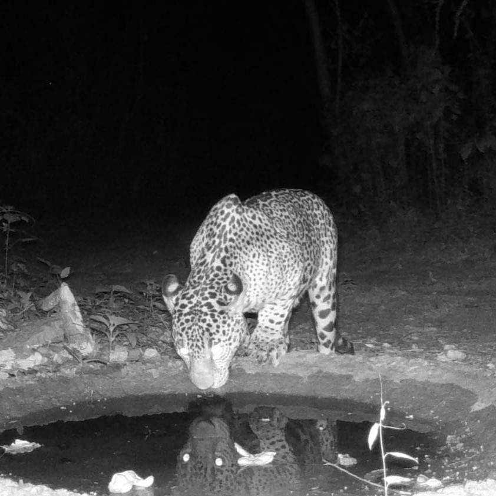
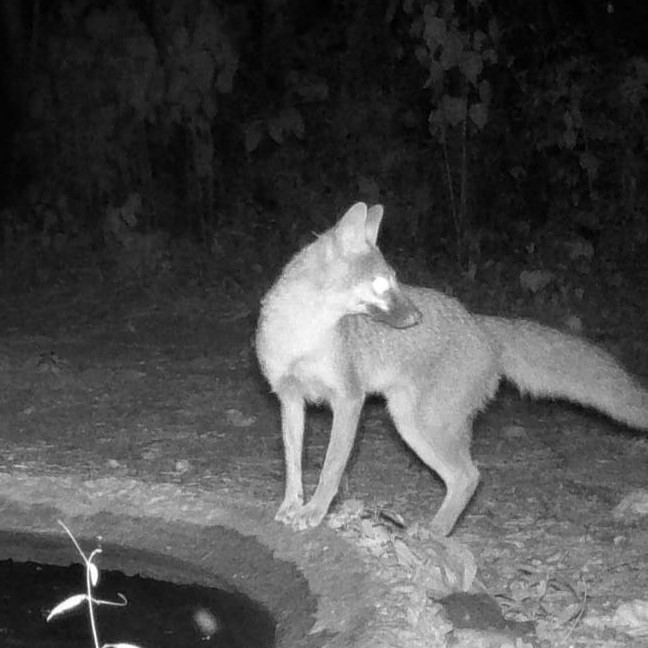
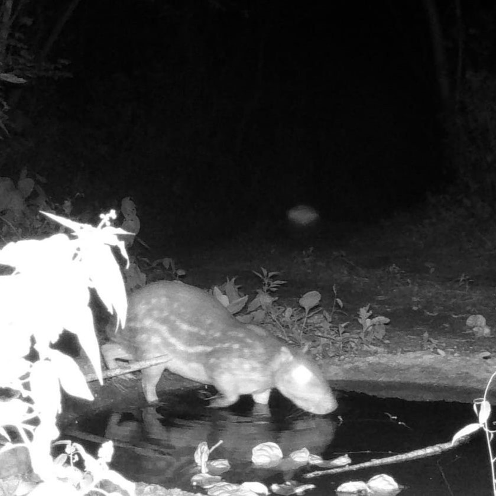
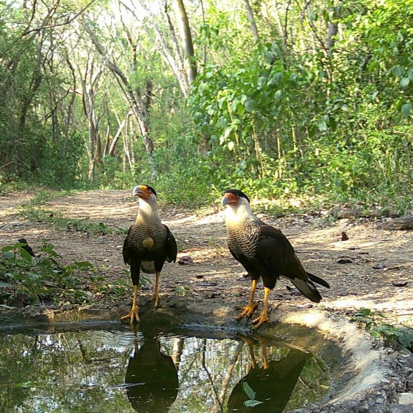
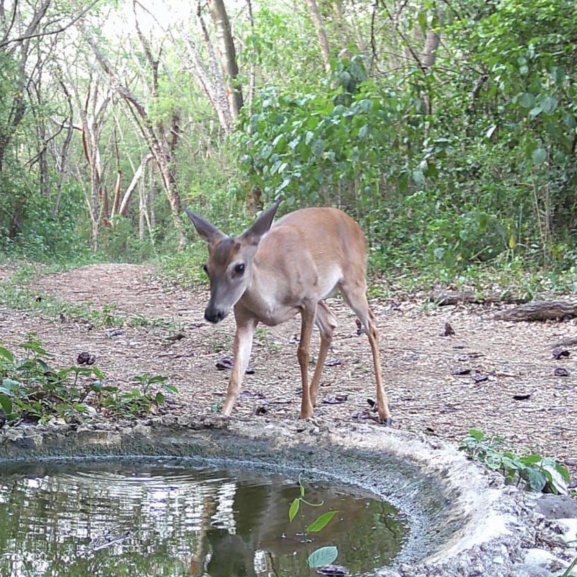
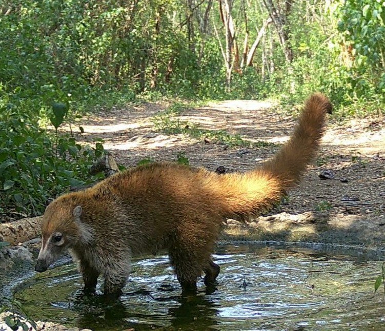
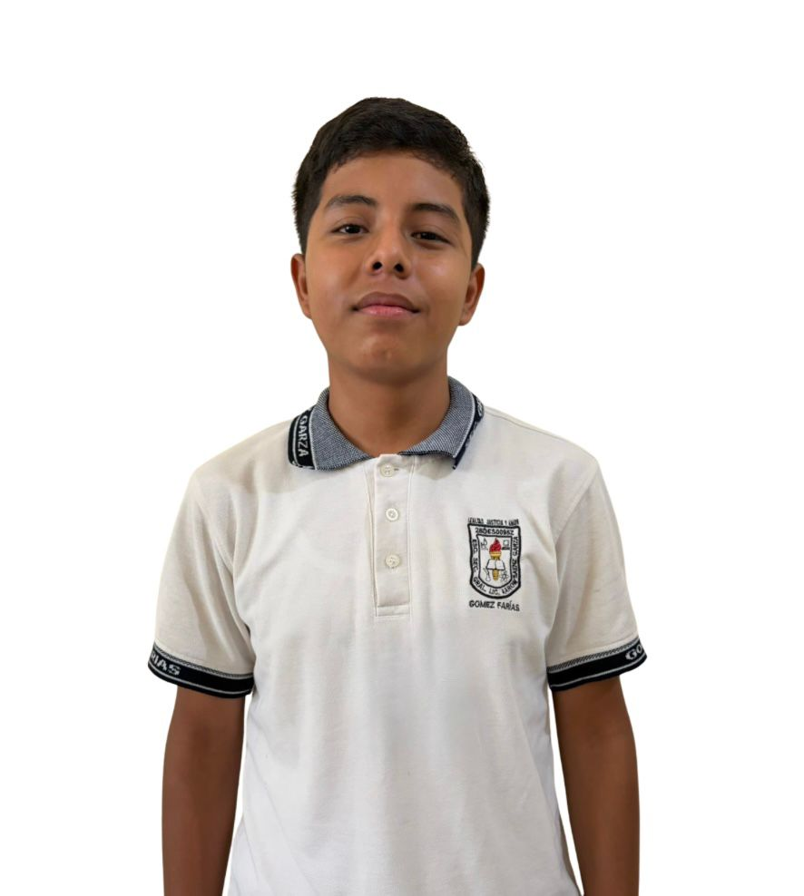
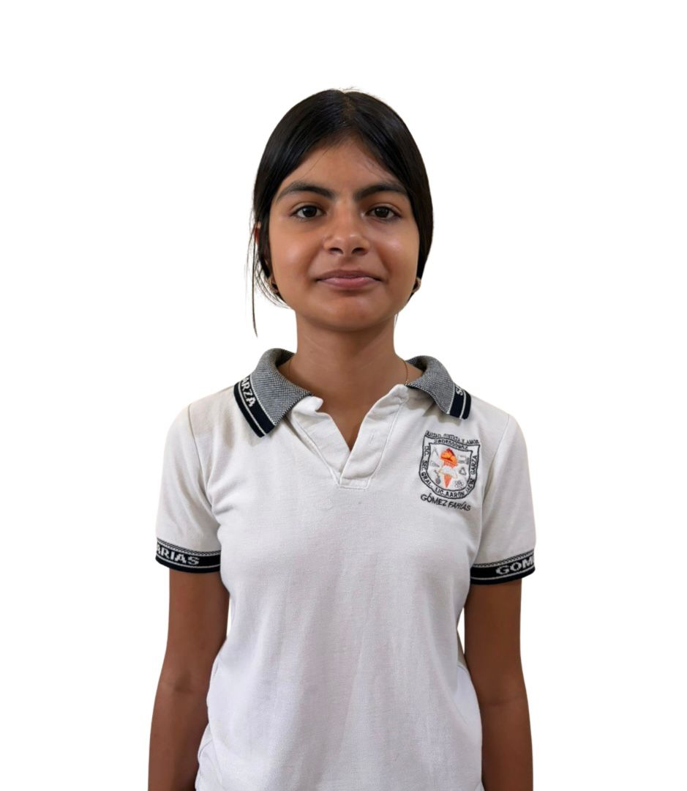

Detectado
Jaguar
Alimentación: Carnívoro.
Importancia: Depredador clave para el equilibrio del ecosistema.
Una plataforma educativa nacida en Gómez Farías, Tamaulipas que conecta la tecnología con el amor por la naturaleza. A través del uso estratégico de cámaras trampa, transformamos a los jóvenes en investigadores ambientales y acercamos a la niñez a la riqueza de la Reserva de la Biósfera El Cielo. Unimos la ciencia real, las herramientas digitales y la educación ambiental para que las nuevas generaciones conozcan, valoren y protejan el hogar del jaguar y cientos de especies más. ¡El futuro de la conservación empieza aquí!
La Reserva de la Biósfera El Cielo es un tesoro escondido lleno de magia y vida salvaje. ¿Te imaginas ver lo que hacen los animales cuando nadie los observa? A través de los ojos de nuestras cámaras trampa, te invitamos a descubrir fotos y videos reales de los jaguares, venado y criaturas asombrosas que habitan este bosque. ¡Conviértete en un Guardián de El Cielo, explora la selva digital y ayúdanos a proteger su hogar!
Registro de especies que habitan en bosques, montañas y senderos.
Captura de animales silvestres sin alterar su comportamiento natural.
Uso de tecnología para aprender, compartir y proteger la naturaleza.
Estas son algunas especies observadas mediante monitoreo en la Reserva.

Alimentación: Carnívoro.
Importancia: Depredador clave para el equilibrio del ecosistema.

Alimentación: Frutos, insectos, aves pequeñas y roedores.
Importancia: Ayuda al control de poblaciones pequeñas.

Alimentación: Frutos, semillas y raíces.
Importancia: Dispersa semillas y ayuda al bosque.

Alimentación: Insectos, reptiles, carroña y pequeños animales.
Importancia: Limpia el ecosistema y controla plagas.

Alimentación: Hojas, frutos, ramas y pastos.
Importancia: Forma parte de la cadena alimenticia.

Alimentación: Frutas, insectos, huevos y pequeños animales.
Importancia: Dispersa semillas y remueve el suelo.
Pon a prueba tus conocimientos de Científico Ciudadano y descubre si estas afirmaciones son reales o puros mitos de la selva.
Descarga nuestro memorama y descubre las especies de la Reserva de la Biosfera El Cielo.
Descarga nuestra sopa de letras para aprender sobre las especies de la reserva.
Descarga nuestro crucigrama y aprende sobre biodiversidad de forma divertida.
Conocer la biodiversidad es el primer paso para protegerla.

Estudiante de la Escuela Secundaria General Licenciado Aarón Sáenz Garza y miembro clave de BIOCIELO. Su labor principal consiste en internarse en los senderos para colocar y supervisar cámaras de fototrampeo. Gracias a su dedicación, el proyecto logra capturar imágenes valiosas para identificar y proteger la fauna silvestre de la Reserva de la Biosfera El Cielo.
Profesor y asesor experto del proyecto BIOCIELO, desarrollado en la Escuela Secundaria General Licenciado Aarón Sáenz Garza. Coordina las actividades de monitoreo biológico, el diseño del proyecto y el trabajo de campo en la Reserva de la Biosfera El Cielo. Su liderazgo impulsa la educación ambiental, la conservación comunitaria y el enfoque social del proyecto.

Estudiante y pilar social de BIOCIELO. Participa aplicando encuestas de inicio y cierre a estudiantes y miembros de la comunidad. Destaca por su trabajo de concientización mediante educación ambiental y análisis del impacto social de las actividades del proyecto.